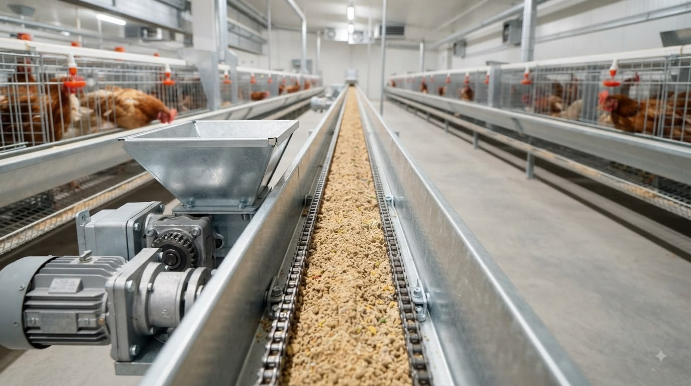
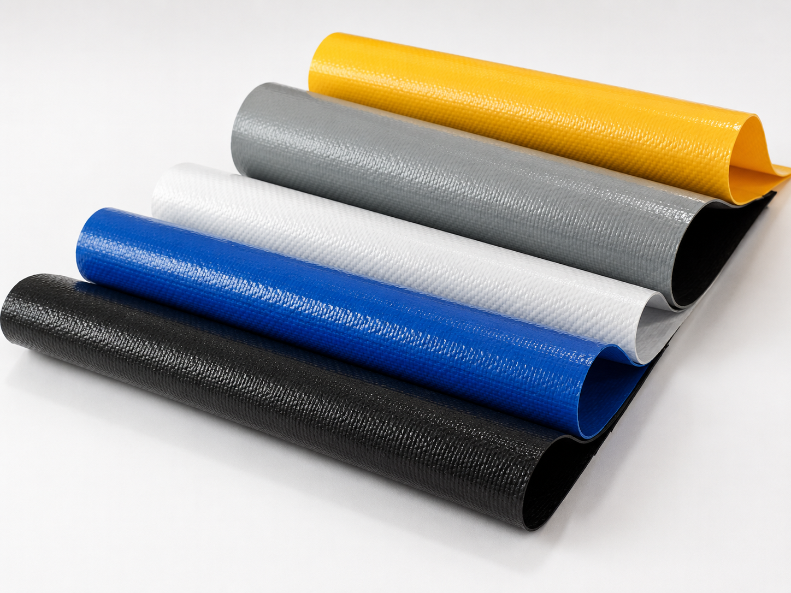
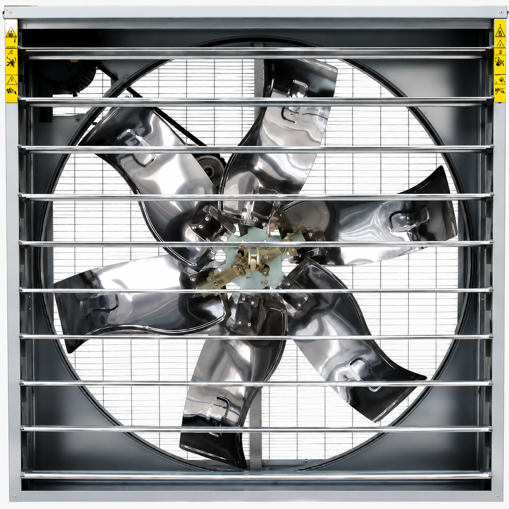
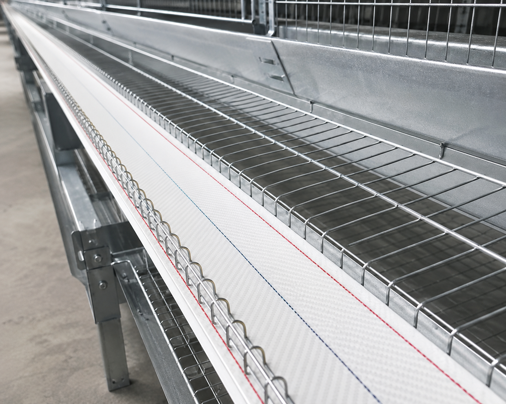
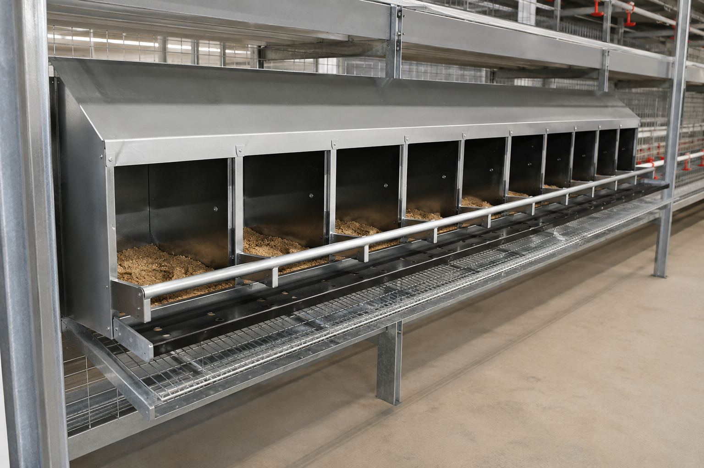
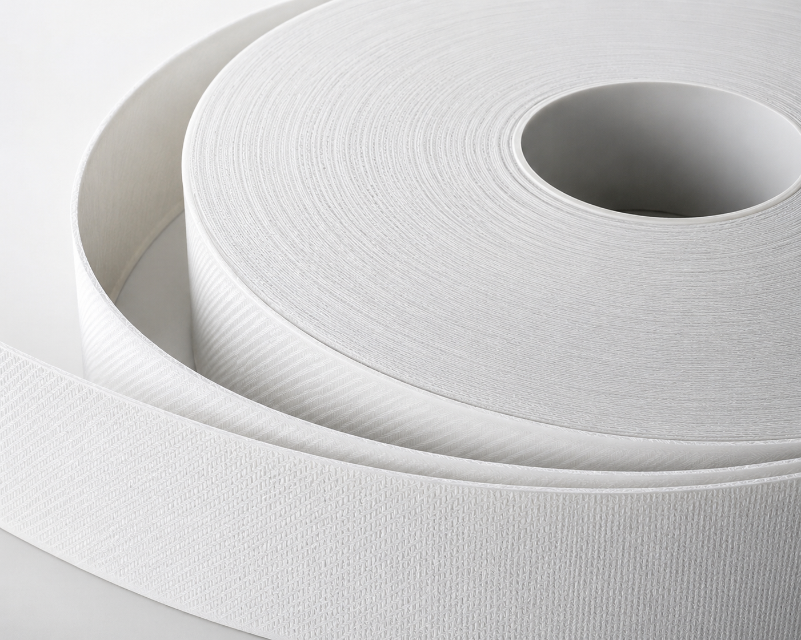
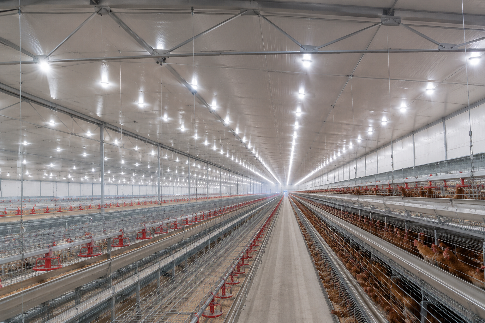
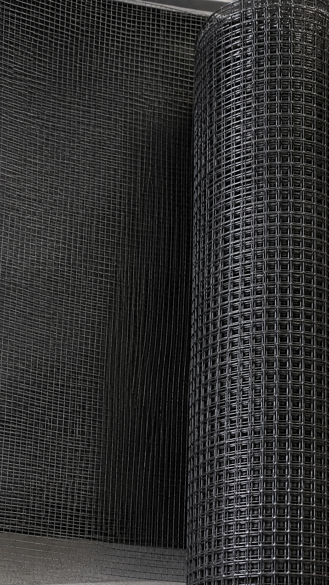

Equipamiento para Producción de Huevos
CRÍA • RECRÍA • PRODUCCIÓN
Soluciones profesionales para granjas de gallinas ponedoras. Diseñamos e instalamos equipamiento para sistemas avícolas modernos.
Consultanos y potenciá tu granjaEtapas de producción avícola
Equipamiento diseñado para cada fase del sistema productivo.
Cría
Equipamiento diseñado para el desarrollo inicial de las pollitas durante sus primeras semanas de vida.
Recría
Infraestructura adaptada para lograr un crecimiento uniforme y saludable de las aves.
Producción
Sistemas orientados a optimizar la postura, el manejo de las aves y la calidad del huevo.
Sistemas de producción avícola
Equipamiento pensado para mejorar eficiencia, bienestar animal y manejo diario en granjas de ponedoras.

Sistema de alimentación
Distribución automática y uniforme del alimento, con menos desperdicio.

Sistema de climatización
Controla temperatura y humedad, favoreciendo el bienestar y rendimiento de las aves.

Sistema de cortinas
Regulan la apertura del galpón, controlando el ambiente y protegiendo a las aves.

Sistema de ventilación
Renueva el aire y mantiene condiciones ambientales adecuadas dentro del galpón.
Equipamiento destacado – Producción de Huevos
Algunos de los equipos más utilizados en granjas de gallinas ponedoras.

Cinta transportadora de huevos
Recolección y transporte eficiente de huevos desde los nidales hasta el punto de clasificación.

Nidales para ponedoras
Soluciones de alojamiento diseñadas para optimizar el manejo y la producción de huevos.

Cinta para extracción de guano
Retira el estiércol de forma rápida, mejorando la higiene del galpón.

Ilumicación avicola
Distribución uniforme de luz, adaptada a cada etapa productiva de las aves.

Manejo y bioseguridad
Soluciones destinadas a optimizar el manejo y mantener condiciones adecuadas de higiene.
Servicios
Acompañamos tu proyecto desde el diseño hasta la puesta en marcha de la granja.

Diseño y asesoramiento técnico
Planificación y diseño de instalaciones avícolas adaptadas a cada sistema productivo.

Instalación de equipamiento
Montaje profesional de sistemas y equipamiento para instalaciones avícolas.

Obra civil
Construcción y adecuación de galpones avícolas para sistemas de producción modernos.